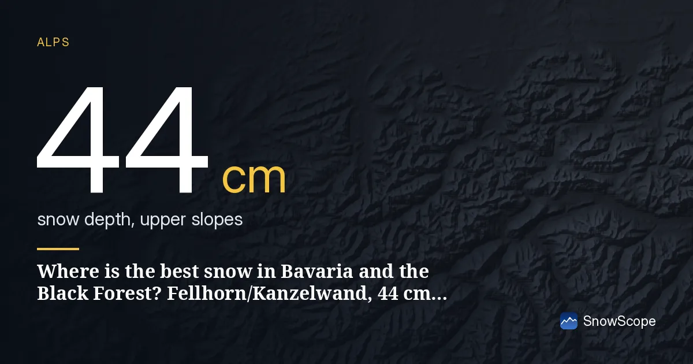
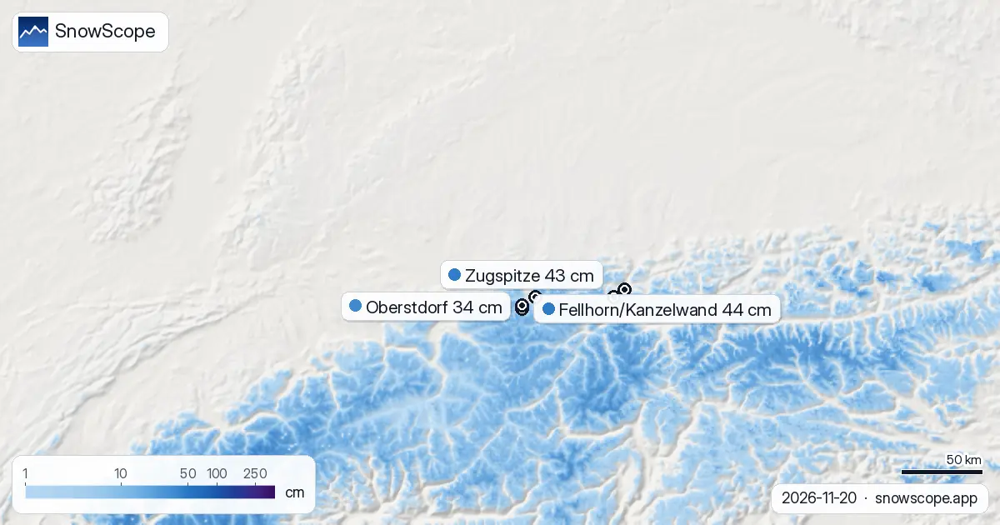

Where is the best snow in Bavaria and the Black Forest? Fellhorn/Kanzelwand, 44 cm on the upper slopes (20 November)
Snow check for Friday 20 November: 8 of 9 resorts in Bavaria and the Black Forest are white up top, the deepest is Fellhorn/Kanzelwand with 44 cm.
See the live snow forecast for Fellhorn/Kanzelwand in the SnowScope appSnow depth, powder alerts and the 3D map, free.
Snow depth, resort by resort
Across all 9 resorts on this list, the middle value is 29 cm on the upper slopes.
Behind the leader: Zugspitze (43 cm), Nebelhorn (41 cm), Oberstdorf (34 cm) and Garmisch-Classic (29 cm).
| Resort | Snow depth | New snow, 72 h | Coming, next days | Top |
|---|---|---|---|---|
| Fellhorn/Kanzelwand | 44 cm | 35 cm | 31 cm | 1,965 m |
| Zugspitze | 43 cm | 16 cm | 24 cm | 2,627 m |
| Nebelhorn | 41 cm | 29 cm | 28 cm | 2,213 m |
| Oberstdorf | 34 cm | 35 cm | 30 cm | 2,213 m |
| Garmisch-Classic | 29 cm | 14 cm | 18 cm | 2,047 m |
| Spitzingsee | 8 cm | 4 cm | 10 cm | 1,569 m |

The top three in detail
Fellhorn/Kanzelwand reports 44 cm up top; the lifts reach 1,965 m. Fresh snow: 35 cm in three days, forecast 31 cm by 23 November.
Zugspitze reports 43 cm up top; the lifts reach 2,627 m. Fresh snow: 16 cm in three days, forecast 24 cm by 23 November.
Nebelhorn reports 41 cm up top; the lifts reach 2,213 m. Fresh snow: 29 cm in three days, forecast 28 cm by 23 November.
Oberstdorf reports 34 cm up top; the lifts reach 2,213 m. Fresh snow: 35 cm in three days, forecast 30 cm by 23 November.
Fresh snow, last 72 hours
Most new snow in 72 hours: Oberstdorf 35 cm, Fellhorn/Kanzelwand 35 cm and Nebelhorn 29 cm.
The next three days
By 23 November the forecast gives Fellhorn/Kanzelwand 31 cm, Oberstdorf 30 cm and Nebelhorn 28 cm.
Off-piste and touring
Powder is possible on the upper slopes after 35 cm of new snow. Tours and off-piste only with the avalanche bulletin read, a transceiver, shovel and probe.
A fresh layer like this makes the difference between scraped pistes and soft, grippy snow, especially on the steeper runs.
Pick for a short trip
Best value for two days on skis: Fellhorn/Kanzelwand, with 44 cm now and 31 cm more expected by 23 November.
Check the traffic at the border and the mountain roads on Saturday mornings: leaving an hour earlier often saves two.
Tips for skiers
- Winter tyres or chains for the last kilometres to the higher resorts.
- Early season: wax your skis, the snow is often abrasive.
- Off-piste only after reading the avalanche bulletin.
About these numbers
Resort snow depths are the deepest snow on the resort's upper slopes from the SnowScope snow model (about 1 km, run of 20 November); they are estimates for an area, not a measurement at one point. Station values are measurements on the date shown. Forecasts can change. Always read the official avalanche bulletin before going off-piste.
Cite this report
For research, teaching or the press: the numbers and charts are free to reuse under CC BY 4.0 with this citation.
SnowScope (2026), Where is the best snow in Bavaria and the Black Forest? Fellhorn/Kanzelwand, 44 cm on the upper slopes (20 November), https://snowscope.app/blog/en/2026/11/schneehoehen-bayern-schwarzwald-20-november-2026.html, accessed 2026-11-20
SnowScope (Atlas Labs). (2026, November 20). Where is the best snow in Bavaria and the Black Forest? Fellhorn/Kanzelwand, 44 cm on the upper slopes (20 November). SnowScope snow reports. https://snowscope.app/blog/en/2026/11/schneehoehen-bayern-schwarzwald-20-november-2026.html
BibTeX
@misc{snowscope2026schneehoehenbayernschwar,
author = {{SnowScope (Atlas Labs)}},
title = {Where is the best snow in Bavaria and the Black Forest? Fellhorn/Kanzelwand, 44 cm on the upper slopes (20 November)},
year = {2026},
month = nov,
howpublished = {\url{https://snowscope.app/blog/en/2026/11/schneehoehen-bayern-schwarzwald-20-november-2026.html}},
note = {Published 2026-11-21 12:23 UTC; accessed 2026-11-20}
}· CC BY 4.0 · Methods, data and tools →
Fellhorn/Kanzelwand: snow and temperature by height, this winter vs last (tools) →
Follow Fellhorn/Kanzelwand
Free: a message when fresh snow is coming, and the forecast every morning.
More snow reports

Alpine day passes from 36 EUR: nine resorts compared by price, kilometres of runs and the snow they usually hold, to find the best day of skiing for your money.

Ten European ski resorts ranked for December value, led by Les 2 Alpes with 75 cm of mid-mountain snow.

Ski the 131 km of runs in the Forêt Blanche this December with a six-day pass for 298 EUR.